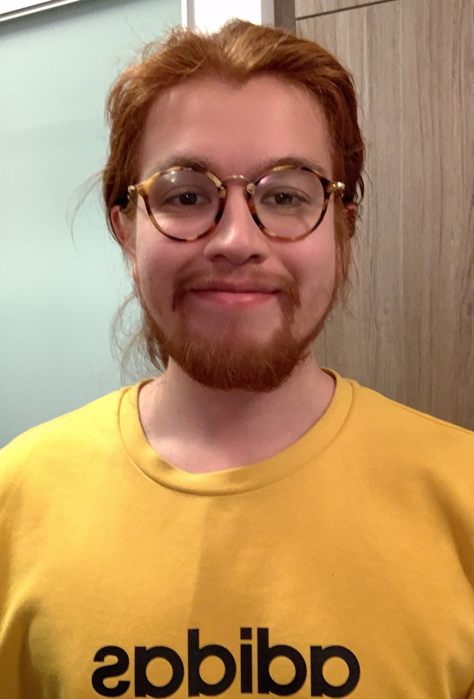

Welcome to my webpage :)
About Me
I am currently a Ph.D. candidate in the Department of Hispanic Languages and Literatures at the University of Pittsburgh, where I am supervised by Professor David Tenorio. My committee members include Professor Gonzalo Lamana, Professor Junyoung Verónica Kim and Professor Alison Langmead. I received my M.A. in Hispanic Linguistics and my B.Sc. in Computer Science from the University of Toronto in June 2020 and June 2019, respectively.
My research focus is in Latin American Studies, Critical Indigenous Studies, Science and Technology Studies, Environmental Humanities, Community-Engaged Scholarship and Digital Methods. I am interested in the ways Pemón peoples in Canaima National Park (Venezuela) use blogs and social media to advance their social and political goals. Click here to learn more.
Please find my CV here.
Contact Me
Email: alt159 (at) pitt (dot) edu
Other: LinkedIn
Projects
¿Quién escucha cuando las ruinas urbanas hablan? Parque Central, El Helicoide y el giro espectral en “El ascensor” (2015) de Mercedes Blanco y “Emunctories” (2018) de Rodrigo Blanco Calderón
Este artículo estudia la representación en la narrativa contemporánea venezolana de dos ruinas urbanas de Caracas, Parque Central y el Helicoide,
como ruinas vivas que intervienen en los ideales de urbanidad y petroestado y no como simples testigos de estos ideales.
Para esto se hace una lectura espectral de “El ascensor” (2015) de Mercedes Franco y “Emunctories” (2018) de Rodrigo Blanco Calderón,
que revelan a estas ruinas como entes vivos que ejercen agencia reproduciendo los excesos del ser petrolero venezolano.
Click here for my position paper presented at NeMLA 2022.
Oil as the "blood of all": Reconfiguring conceptions of the common from U'wa thought
This presentation examines the U'wa peoples' contestation of biopolitics of extraction.
Namely, I consider their conception of oil as a “blood of all” (ruiria) as a move to contest the necropolitics of extraction with cosmopolitics.
By considering oil as a part of the community—like other humans and animals—it contests modes of dispossession as technology that has marked
indigenous life and death in border extraction zones.
Click here for my position paper presented at JALLA 2022..
Teaching
| Job Title | Course Name | Term | University |
|---|---|---|---|
| Instructor | (SPAN1323) Medical Spanish | Spring 2023 | University of Pittsburgh |
| Instructor | (SPAN120) Conversation | Fall 2022 | University of Pittsburgh |
| Instructor | (SPAN104) Intermediate Spanish II | Spring 2021 | University of Pittsburgh |
| Instructor | (SPAN103) Intermediate Spanish I | Fall 2020, Fall 2022 | University of Pittsburgh |
| Instructor | (SPAN101) Beginner Spanish I | Summer 2021 | University of Pittsburgh |